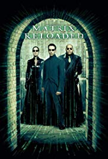
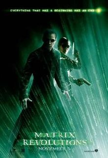
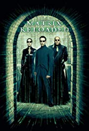
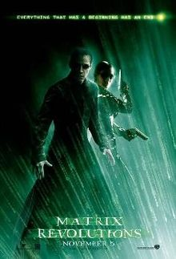

Introduction
Keanu Charles Reeves (/kiˈɑːnuː/ kee-AH-noo; Born September 2, 1964) is a Canadian[a] actor, director, producer, and musician. He gained fame for his starring role performances in several blockbuster films, including comedies from the Bill and Ted franchise (1989–1991); action thrillers Point Break (1991), Speed (1994), and the John Wick franchise (2014–2019); psychological thriller The Devil's Advocate (1997); supernatural thriller Constantine (2005); and science fiction/action series The Matrix (1999–2003). He has also appeared in dramatic films, such as Dangerous Liaisons (1988), My Own Private Idaho (1991), and Little Buddha (1993), as well as the romantic horror Bram Stoker's Dracula (1992).
Skills & Talent
- Actor
- Director
- Suave Gentlemen
- Producer
- Motorcycle Enthusiast
- Musician
- Pretty Solid Dude in General
- Hockey Player
Filmography
Keanu Reeves has literally only been in three movies and they are all the Matrix, which is great because this list would have been way longer & time consuming to make otherwise. He's also a really great guy so you don't need to fact check this information at all - hey, check out these sweet pictures. . . .
 



Locations of Residence
- 1964 - Beirut, Lebanon
- 1966 - Sydney, Australia
- 1970 - New York City, USA
- 1971 to present - Toronto, Canada
List of Awards
- Star on Hollywood Walk of Fame
- MTV's "Most Desirable Male"